Published as an online curation on Art UK
Muirhead Bone (b.1876 - d.1953) was a Scottish artist born in Partick, Glasgow. He initially became known for his etchings of industrial scenes and cityscapes, but gained popularity through his depictions of war, becoming appointed Britain’s first official war artist in 1916. In 1911 he produced a set of etchings titled 'Glasgow: Fifty Drawings by Muirhead Bone', revealing a city in change, on the cusp development. Bone worked to showcase snippets of Glasgow's hustle and bustle, with quick sketches to capture a fleeting moment, and detailed drawings to dwell on intricate scenes. Bone’s own personal and professional life was also on the precipice of change. An Artist and his city developing and transforming alongside each other.
The late 19th and early 20th centuries were exciting times for Glasgow as it saw rapid growth of industries such as coal, iron and steel, railways, and importantly, shipbuilding. Glasgow’s position, as a port city, enabled it to experience huge success with its shipbuilding industry. Muirhead Bone depicted the labourers hard at work, demonstrating that it was the people of Glasgow who made it possible.
City Centre, Glasgow
Muirhead Bone grew up in Glasgow and initially apprenticed as a painter of porcelain and later on as an architect's draughtsman for four years before moving on to art. Bone’s experience as a draughtsman for an architect is reflected in his work which focuses on cityscapes and built up areas. His etchings often display extreme precision and high levels of detail. Following his apprenticeship, Bone studied art at the Glasgow School of Art initially through night classes. It was there where he met his friend Francis Dodd, whose sister, Getrude Helena Dodd, Bone would go on to marry.
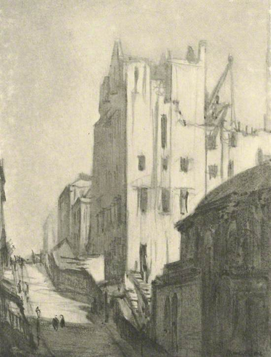
Building the School of Art, Renfrew Street
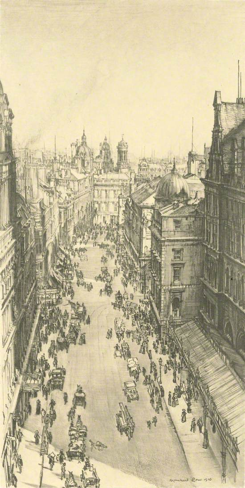
Gordon Street, Looking East
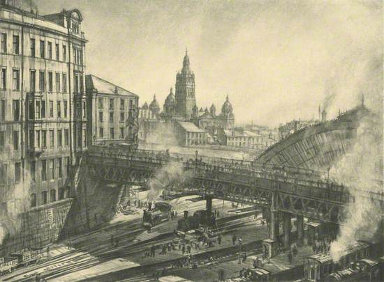
Queen Street Station and Towers of Municipal Buildings
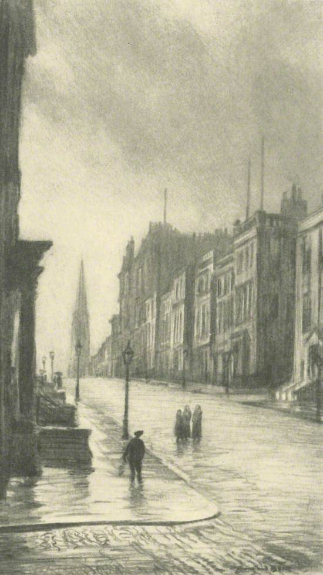
St Vincent Street, Looking West
West End, Glasgow
Bone was continually drawn to development of city scenes, initially making a name for himself with drawings and etchings of the demolition and construction of Edwardian London. He received praise for his intense detail and anatomical portrayal of buildings. Bone began working out of Glasgow and found some success; however, he felt financially it was limiting as no dealer was willing to pay him the money he felt he deserved. To remedy this issue, Bone then moved to London in 1901 where his career skyrocketed. In London he became a founding member of the artist group: 'The Society of XII'. Bone had the most commercial success of the society members, with The Times reporting that Bone’s etchings "had created quite a cult".
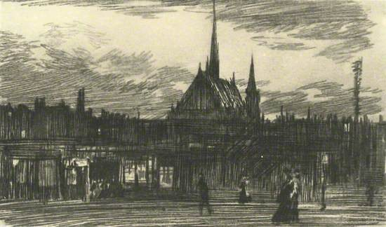
Byres Road and Hillhead Parish Church
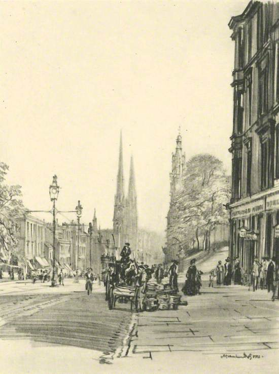
Great Western Road, Hillhead, Looking East
University of Glasgow, Glasgow
The name ‘Society of XII’ was in reference to the ‘Society of Three’ founded 50 years earlier in France, one of whose members was James McNeill Whistler, an artist identified as an inspiration to Bone and the Society as a whole. Bone described Whistler as “one of us” and counted an early set of his Thames engravings, alongside the Paris engravings by Charles Merion as having significant influence on his own work. Bone also identified Edgar Degas as an inspiration for his draughtsmanship and Pierre Puvis de Chavannes for his compositional order and restraint. Visual similarities can also be drawn with the atmospheric cityscapes of Adolf Valette and the industrial scenes of Manchester by LS Lowry.
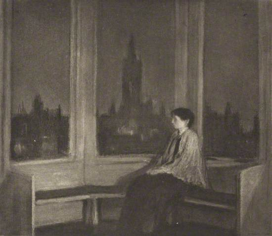
The University by Night, from Hillhead
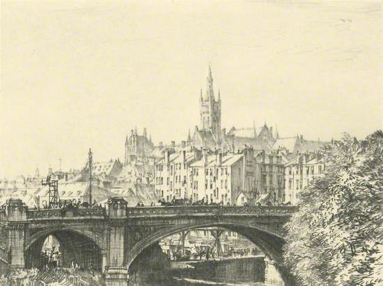
Kelvin Bridge, Great Western Road and the University from the North-East
‘The Old Closes and Streets of Glasgow’, Thomas Annan
Bone’s etchings of Glasgow reflect the city at a transitional time. Glasgow photographer Thomas Annan, commissioned by the City of Glasgow Improvement Trust to document the closes and wynds of Glasgow which were set to be demolished, produced a photoset titled ‘The Old Closes and Streets of Glasgow’, showing the raw and brutal reality of city life. Muirhead Bone personally knew Annan and was friends with his son James Craig Annan. Annan commissioned Bone to create a set of etchings for him in 1901. As Bone’s etchings of Glasgow visually resemble the photography of Annan, it could be assumed that Bone took a level of inspiration from these works. Annan’s photography company, T. & R. Annan and Sons went on to promote Bone's work.
Though it is unknown how and when the Bone etchings came into the Royal College of Physicians and Surgeons’ possession, the Annan photographs were given to the College by Lord Provost John Ure at City Chambers in 1881.
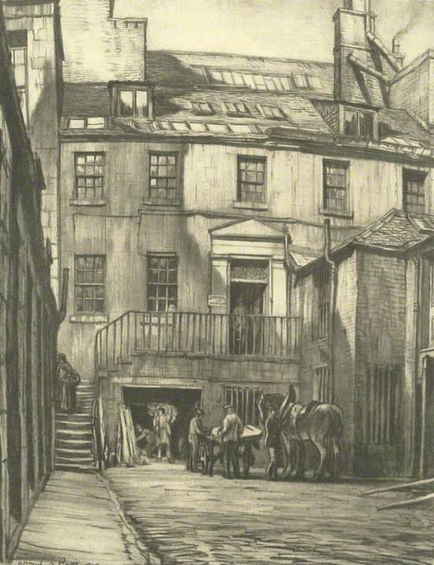
Old Lodging off Trongate
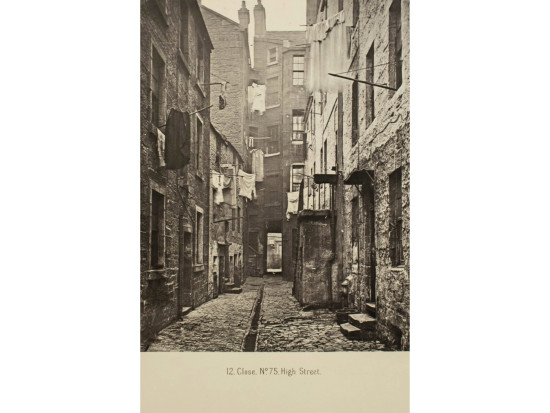
Close, No.75, High Street
The River Clyde, Glasgow
Bone was often drawn to dark, dimly lit and nighttime scenes and experimented with restricted focal planes. He implemented blurring of backgrounds and foregrounds to achieve this and became known to some as “A master of the lead pencil”. Bone himself described art as being “nature dignified and refined” and that style is the “omission of detail”. Many of these techniques and specialisms can be seen through these 50 drawings: the night-time scenes of Glasgow Cross, Relaying Tramway Lines at Night, and The University by Night, from Hillhead, the blurred misty atmosphere in Suspension Bridge, Clyde Place and Kelvinhaugh Ferry, and the light hand and omission of detail in The Barrow Market on Saturday, Albert Bridge.
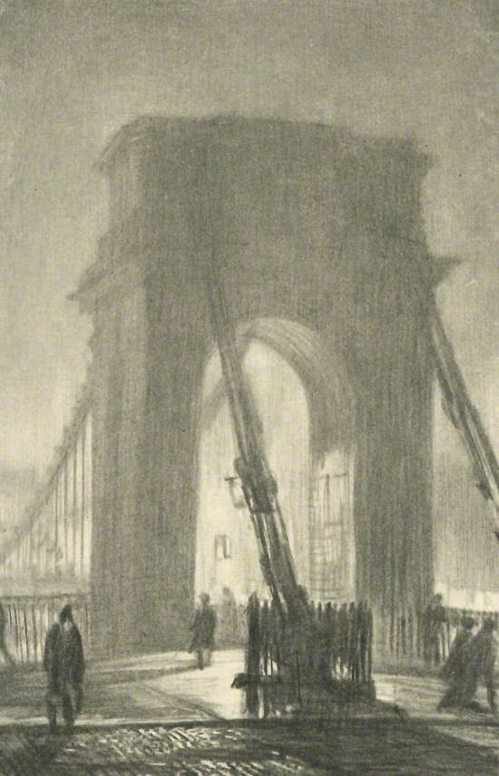
Suspension Bridge, Clyde Place
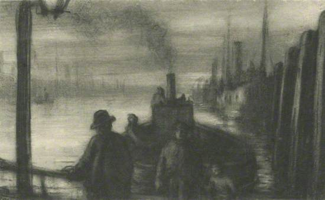
Kelvinhaugh Ferry
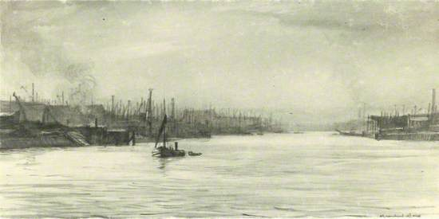
Shipyards on the Clyde
People Make Glasgow
In 1911 Bone suffered the loss of his father. Having moved to Italy a few years prior in 1909 with his family, he returned home to Glasgow to complete the 50 drawings exhibited in this curation. Perhaps Bone’s return home was prompted by his father’s passing, as he remained in Britain afterwards. Just a few years later, in 1915, the 'Society of XII' ended, and in 1916 Bone became Britain's first ever officially recognised war artist. He received a knighthood in 1937.
1911 was an important year for Bone as it marked a year of personal loss, changes in circumstance and preceded huge career shifts and successes. Bone’s life was changing and growing just as Glasgow was.
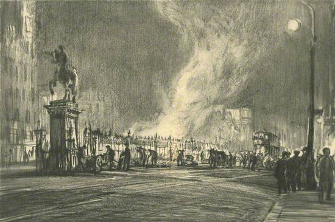
Glasgow Cross, Relaying Tramway Lines at Night
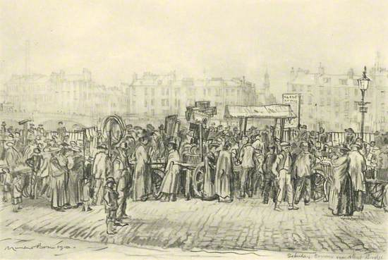
The Barrow Market on Saturday, Albert Bridge
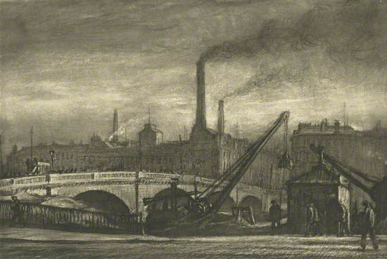
Stockwell Bridge and the Gorbals
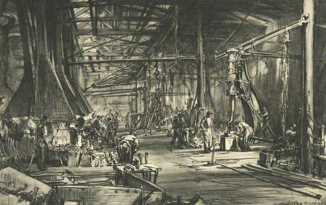
The Smith's Shop, Fairfield Shipyard
Muirhead Bone had great respect for his subjects and has been described as “[viewing his subjects as] near and tolerant - almost affectionate and intimate". With this in mind it is easy to see the love and adoration he felt for Glasgow, his home city, documenting its growth and development alongside his own.
Sources
Bone, Sylvester. "Muirhead Bone and the Society of XII." The British Art Journal 4, no. 2 (2003): 66–73. http://www.jstor.org/stable/41614462.
Chilvers, Ian. The Oxford Dictionary of Art & Artists. Oxford University Press, 2009
Malvern, Sue. "War Tourism: 'Englishness', Art, and the First World War." Oxford Art Journal 24, no. 1 (2001): 45-66. https://www.jstor.org/stable/3600378.
Gossman, Lionel. “The Built Environment.” In Thomas Annan of Glasgow: Pioneer of the Documentary Photograph, 1st ed., 67–88. Open Book Publishers, 2015. http://www.jstor.org/stable/j.ctt15m7nfn.8.